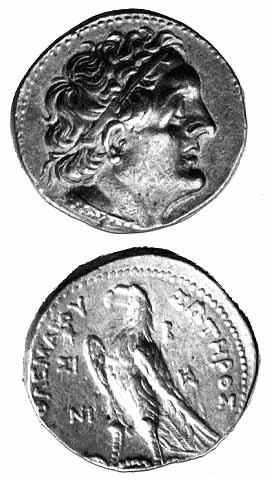

|

The above image is from
Coins & Medals On Line
|
Egypt Tours and Travel web page says:
Ptolemy II Philadelphus
282-246 B.C.
Ptolemaic Dynasty
Ptolemy II Philadelphus, which means
'Brother/Sister-loving', was the second ruler of the
Ptolemaic Dynasty. His construction efforts included that
of building the canal that linked the Nile to the Gulf of
Suez. He was married to his full sister Arsinoe II. He also
began a tradition of a four-yearly celebration to honor his
father. It was intended to have a status equal to the
Olympic games. According to the "Letter of Aristeas",
Ptolemy II requested 70 Jewish scholars come from
Jerusalem to translate the Pentateuch into a Greek
version to be placed into the Great Library collection. He
died on January 29, 246 BC.
The Pentateuch is the first five books of the Old Testament.
Ashraf Al Shafaki's Blog
that has some information about Ptolemy II. Look for the July 7, 2007
entries.
|